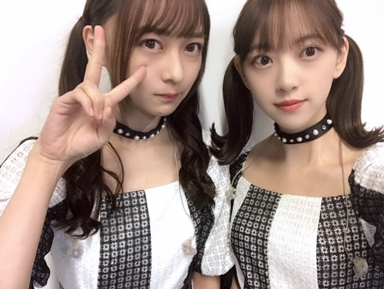
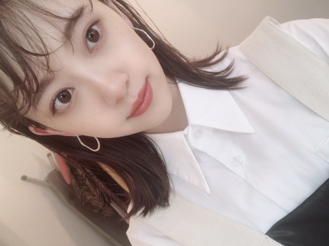

2019/1111Monゆず茶ってずっと言い続けてた飲み物、実はゆずは入っていないただの生姜はちみつ茶でした
ゆず茶飲みたい〜
ゆず茶まだある？
ゆず茶冷めちゃった〜
私がずっと"ゆず茶"と認識して"ゆず茶"と呼んでいた母お手製の喉にいいお茶
だがしかし
ある日突然そのときは来ました
ちょっと待って
ゆず入ってなくない？
母に恐る恐る聞きました
これってゆず入ってる？
母
ううんはちみつと生姜だけ
え？？？
ちょっと待って？？？
はちみつと...生姜？？
ナゼ自分がこんなにも ゆず茶だと思っていたのかはわからないし
勘違いってコワイ
（＾_＾）

チョーカーってかわいくてすきだなぁ
たくさん付けたい！
この間のmステでもキラキラのチョーカーしてました！
アクセサリー、洋服、メイク、身の回りにキラキラをたくさんつけたい❤︎

AirPods、次は落とさないようにしなきゃ。
もうニットきはじめちゃってる。
早いかな？？

arみてね！
では☺︎
2019/11/11 16:06


コメント(277)
毎日お疲れ様です！
お母さんのはちみつ生姜茶をゆず茶と間違えるのが未央奈らしくて素敵です✨好きです！
これからも頑張ってね！
12月のインテックス大阪で待ってまーす！
思い込みによる勘違い 自分もよくある。笑
例えば
小説読んでて登場人物を男性だと思ってたら女性だったり
登場人物を勝手に若い人だと思ったり
などなど
仕事とかでもたまにやらかしたりするんだよねー。(>_<)
チョーカー似合ってるね！
キラキラしたものいっぱいつけたい気持ちもわかるけど
これ以上輝いたら眩しくて見えないよー(≧∀≦)
さてさて
今日も素敵な１日をお過ごしください。
またね～
友人の知り合いが大阪に旅行したとき屋台のたこ焼きを買って食べたら中にタコが全然入ってなかったそうで。
お店の人に「おっちゃん、このたこ焼きタコが入ってないやんか」と文句を言ったところ、おっちゃん慌てず騒がす「そやのう、鉄板焼きにも鉄板入ってないからのう」と、秀逸な返しをされたそうです（笑）。
堀さんのお母様お手製のゆず茶に柚子が入ってなかったのも、きっと同じ理由からなのでしょう（←絶対違う 笑）。
めっきり冷え込む日が増えてきました。ニットの洋服はこれからの季節にぴったり。おしゃれに暖かく毎日をすごしましょう。ぬくぬく。
ではまたコメント寄せます。
さらばだ、また会おう！（気球に乗って去りぬ～）
5部の遅い時間に行ってごめんねー！、
でもすごい神対応だった！
全握もいくね！！
チョーカー似合ってます。なんで、チョーカーって言うんでしょう？
ゆず茶～～～～じゃあーーな～～～～い
みお造も先週末からニット着てまーーーーわす
ゆず茶の話、面白いです笑笑
れなちさんとの写真、珍しいね
絢音ちゃんとは、安定ですね◎
寒くなってきてるから、
ニットありだと思いますよ♪
もう寒くなってきましたね…みおなさんの冬服楽しみです！！
お身体を労ってください。応援してます！！！
それを聞いたお母さんも否定しないところ。
何か堀ちゃんらしくてすきです。
降星はスヌーピーの事を
小学生のときに「すーぴー」っぽく言ってた。
案の定、女の子にバカにされた。
喉の調子は良くなりましたか
ゆず茶の勘違い
思い込むと抜け出せなくなることって
ありますよね～
お母さんとコントしてるみたいで
読んでいて面白かったです笑
安定の仲良し二人組
写真を見て癒やされてます
ツインテール最強！
キラキラ輝いてくださいな
arみますね
インスタもしっかりチェックしてます
青い空きれいでしたよ～
寒くなりましたので
暖かくしておでかけして
くださいね(^_^)
今日ののぎおび観れたよ～！
新しい髪の色、いいかんじだね！
すごい美人さんです！
今日の画力もたいしたものでした！(笑)
ホットのアールグレイ美味しそうだったなぁ。
ゆず茶は結局なんだったんだろうね？
明日はベストヒット歌謡祭か！
もうそんな時期なんだ～！
録画して観るね！
寒くなってきたから紅茶で喉潤して体調に気をつけてね！
応援してます！
良かった〜❤️❤️❤️❤️❤️ 未央奈さん☆❤️❤️❤️ 今日ののぎおび☆彡可愛かったよ❤️❤️❤️❤️❤️❤️❤️❤️ 乃木坂一の美人さんとして、のぎおび☆彡あっという間の３０分でしたね。 淡いベージュに染めたヘアースタイルもとっても素敵❤️❤️❤️❤️❤️❤️❤️❤️❤️❤️❤️❤️でしたよ！！ (o^^o) このまま新作映画に出てもいいぐらいです‥❤️❤️❤️ ゆず茶って、沖縄では飲んだことないです！ でも生姜湯だったらあるかなぁ？ 未央奈さん☆のお母さんは、優しいね。 母の味は、なんでも美味しいからね。 今は、母とは、離れてますから余計にそう思います。 未央奈さん☆お母さんをお大事にね。
じゃあ、未央奈さん☆❤️❤️❤️ 今夜もおやすみおな♫♫♫ 明日は、レコメン頑張ってくださいネ❤️❤️❤️❤️❤️❤️❤️❤️❤️ 夜遅いので、また喉の調子が、悪くならないよう気をつけてネ❤️❤️❤️❤️❤️❤️❤️❤️❤️❤️❤️ そして夜は、暖かくしてお眠りになってください！ 未央奈さん☆！今夜も風邪ひかないでネ〜❤️❤️❤️❤️❤️❤️❤️❤️❤️❤️❤️❤️❤️❤️❤️❤️❤️❤️❤️❤️❤️❤️ 明日は、ベストヒット歌謡祭！頑張ってください！！ （＾_＾）
似合うよ
ツーショットは神！
美しすぎて怖い！
暖かそうですね。
喉大丈夫ですか？
体調に気をつけてね。
またね
◎写真集インスタ
新しいベージュの髪色も似合っている！
前髪短くなっちゃったのも似合っているので全然OKです
だいぶ髪の毛伸びたね～
お腹空いたの写真だね～
私もくすみブルーが好きだから、堀ちゃんの着ているワンピースがほしいくらい
◎秋の銀杏
ベレー帽似合ってた！
ウインクはずるいです笑可愛すぎ
◎のぎおび
観れなくてごめんね
でも一瞬だけ観ました。
YouTubeであるかなぁ
◎明日のこと
ベストヒット歌謡祭&レコメン楽しみにしてます
ではまた(*´∇｀*)
ゆず茶の話は秀逸すぎて笑っちゃいました(笑)(笑)(笑)
人の記憶は意外にあいまいで、自分であれはこうだよななどと勝手に思うと、ついそれが正しいと思って確認しないままで時間が過ぎ、間違いなかったよなと思い、それを知ってる人に確認したら、自分が思い込みしていたのが
、そこで初めて気付く事がありますね。
(=^ェ^=)
もう世界壊れちゃいますよ！
ワイヤレスマイクが最先端を演出してるのに
ブログの中身はゆず茶という和風っぷりが最強ですね！
お母様のはちみつ生姜美味いんでしょうね～(^^)
ブログ更新ありがとう、嬉しいです。
ツインテールもカワイイけど、怜奈ちゃんとのツーショットも素敵で綺麗。
のぎおび見ました。あの髪色と髪型が好きです、服装も流石のモデルさん素敵でした。あっという間の30分でしたし、喉が治ったようで良かったね。
今日は歌謡祭からのレコメン、良い体調でパフォーマンスしてください。
乃木坂46と頑張ってるcuteでsmartな未央奈ちゃんを応援しています。
たこ焼き食べたで
お好み焼きもええな～
勘違いはよくあります。気にしないで大丈夫ですよ！
って言っても、言わないとわかんなそうですよね笑
女の人がチョーカーしてるの何かかわいいなって僕も毎回思います！
チョーカーって色んなデザインがあって面白いですしね！
AirPods僕も持ってますけど、ほんと気持ちわかります！
落としちゃったらほんと焦りますからね
あと、幕張の個握ありがとうございました！
未央奈ちゃんとは1部と5部で、1枚ずつしかなかったけど、今日だけしか未央奈ちゃんいないから握手出来て良かったです！
5部の時に僕が着てたバーコードの服いじってくれて、嬉しかったです笑
寒くなってきたから体調には気をつけてね！
握手会絶対またいきます！
今日は大阪城ホールだねぇ
楽しみだ～
いつもありがとう❤️
大丈夫？
無理しないでください❤️
はい❤️
今日はベストヒット歌謡祭でございますね❤️
久しぶりにみんなに会えるので嬉しいです❤️
相変わらずのテレビからの応援だけど……
ガンバって応援します❤️
ね❤️
みおな❤️
ガンバりゃあよ❤️
（＾_＾）Ｖ
☆☆☆☆☆☆☆☆☆☆☆☆☆☆
。
また握手会に行きたいです。
チャァオ～～!☆彡
綺麗なぁ綺麗なぁ～～⤴️⤴️⤴️
プリンセスみおちゃん❕❤️❤️❤️❤️❤️笑顔
歌番組見れたよ～～～～⤴️⤴️❕❤️❤️❤️❤️❤️笑顔
ポニーテールのみおちゃん、とってもお綺麗で最強でしたぁ～～～⤴️⤴️⤴️❕❤️❤️❤️❤️❤️笑顔
超・サイコ～～～⤴️⤴️⤴️❕❤️❤️❤️❤️❤️笑顔
めっちゃハッピ～～～⤴️⤴️です❕❤️❤️❤️❤️❤️笑顔
(*^▽^)/★*☆♪❤️❤️❤️
☆大人しい、おすまし！☆彡
ベストヒット歌謡祭おつかれさま～
カラコン…ハートになっていますね
おしゃれだなぁ～
今日は底冷えするから、あったかい食べ物
で身体をあたためてね～
おやすみなさい
この前レコメン聞いてたらそのまま寝ちゃいました。きずいたら終ってました
ごめんなさい。
体調気をつけてね。
ベストヒット歌謡祭観たよ！
相変わらず色白で綺麗だね～
堀ちゃんのポニテ好き(^^)
沢山人数がいるのに堀ちゃんはすぐ見つけれる！
なんか堀ちゃんだけ雰囲気が違う感じがするんだよね
透明感なのかな？
映った時に画面が明るくなる感じ
上手く言えないけど伝わるかな？
とにかく、堀ちゃんは素敵だということだけでも伝わったらいいな
ではまた(*´∇｀*)
今日のベストヒット歌謡祭観ましたー！
久しぶりのSing Out!、やっぱり堀ちゃんが踊るSing Out!が可憐で素敵です(o^^o)♩
これから年末にかけてSOが観られるのかな〜、夜明けまでもまた観られるかな〜、どちらも違った良さがあるので楽しみです( ´ ▽ ` )
どちらにせよ堀ちゃんのダンスを観る機会が増えるのはこの上なく嬉しい(*´ー｀*)
そして終わったあとはレコメン!に駆け付けてくれて！本当にありがとうございます！
あの時間に大阪で生放送をして、その後に東京で生放送は厳しいだろうなぁと、正直今日は堀ちゃんの声が聴けなくても仕方ないと思ってました(^^;)
ところがどっこい！
始まってほんとにすぐ！堀ちゃんの声が聴こえてくるではないですかー！
仕方ないなと自分に言い聞かせていたものの、やっぱり堀ちゃんの声を毎週聴きたいワガママなファンなので、めちゃくちゃ嬉しかったです(*´ー｀*)
それと、のりさんが堀ちゃんがいないと元気がないことないこと笑
やっぱり2人は最高のMCコンビです、間違いなく一番好きなラジオ(o^^o)
魔女宅クイズで爆笑してる堀ちゃんが今日も大好きで、クイズで盛り上がって放送が入りきらないレコメン!が今日も大好きでした( ´ ▽ ` )笑
そして、インスタに上げてくれた4人の動画！
なんですかあの幸せ動画は…(*´ー｀*)
今年1番顔が緩んだかもしれません、みんなめちゃくちゃ可愛くて仲良しで、雰囲気がどストライクです…！
僕が乃木坂を好きな理由が、あの動画に詰め込まれている気がします(o^^o)
最高に幸せな動画をありがとうございます！
そして毎日投稿楽しみにさせてもらってます！(o^^o)
では！書きたいことは尽きませんがこの辺で！
明日からもどうぞよろしくお願いします(o^^o)♩
ベストヒット歌謡祭見ました。「踏み鳴らせ」の後の全員のターンを上から映した様子が美しくて、花火大会の最後のラッシュみたいでした。
あと、のぎおびも見ました。髪色髪型とニットが相まって、とても大人っぽい印象でした。
運の良さも発揮してて見事でしたね。運も実力のうちって言いますけど、はぐれメタル出るのは運だけど倒すのも上がったレベルも実力ってことなんでしょうね。
それと、流行りそうなスプラッターの話が斬新で面白かったです。堀さんに服のしわ伸ばしてもらいたいです。
おはようございます
ゆず茶って飲んだ事ないけど、美味しそうですね
子供の頃から飲んだり食べたりした物は、大人になっても変わらず好きというのはありますね
AIR PODS proこないだ買いました
9日に握手会行ってから次の日に新宿の家電屋さん行ったら在庫がたまたまあって買ったけど、ノイキャン機能すごいよね（静寂が訪れるね）
ゴルゴンゾーラの音質もバッチリでした笑
あっ、握手会については次のブログコメントで書きますね
火曜日ののぎおびもベストヒット歌謡祭も観ました
最近は、大人な雰囲気も出しながらどんどん可愛くなっていきますね
ここ最近は、みおなをたくさん見ることが出来て嬉しかったです
インスタもチェックしてるので、これからも写真送ってください
仕事行きます
ありがとうございました
コメントする